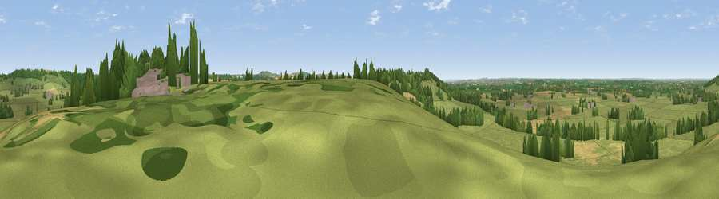

Viewpoint near Foxham
#21570 in England · top 34% of its area beats it · near FoxhamWhere it is
The exact computed spot (ST 98375 75525). Click the marker for map links.
The view, rendered

A 360° render of this exact spot computed from the terrain model, tree cover and land cover — summer colours, afternoon light, calibrated against photographs of famous viewpoints. Real trees, hedges and buildings will differ in detail.
The panorama
Grey silhouette: terrain skyline in each direction (720 bearings, Earth curvature and refraction included). Dashed green: skyline with trees (+15 m) and buildings (+8 m) as obstacles. Blue strip: how far the ground is visible on each bearing.
Where the view opens
Wedge length = distance to the farthest visible ground on that bearing (vegetation-aware). Rings at 10, 25 and 50 km.
What fills the view
71% grassland · 14% cropland · 13% woodland · 2% built-up
Angular shares of the visible panorama (visual magnitude), not map area. Landscape diversity 0.37 (0–1 Shannon).
Key numbers
More beautiful places nearby
The staircase of upgrades: each row has a higher view potential than everything closer. Driving times are estimates from straight-line distance, calibrated against real road routing — check an actual route before setting out.
| Place | Direction | Drive | Score |
|---|---|---|---|
| Viewpoint near Bremhill | SSW · 1 km | ~4 min | 57.3 |
| Viewpoint near Foxham | N · 2 km | ~6 min | 57.6 |
| Viewpoint near Foxham | N · 3 km | ~7 min | 60.5 |
| Viewpoint near Clyffe Pypard | E · 7 km | ~14 min | 62.5 |
| Viewpoint near Clyffe Pypard | E · 7 km | ~15 min | 63.7 |
| Viewpoint near Cherhill | SE · 9 km | ~18 min | 71.2 |
| Viewpoint near Cherhill | SSE · 10 km | ~19 min | 73.6 |
| Morgan's Hill | SSE · 10 km | ~19 min | 74.3 |
51.47868, -2.02479 · source: screening · position refined by local search. Computed location — check access rights before visiting.